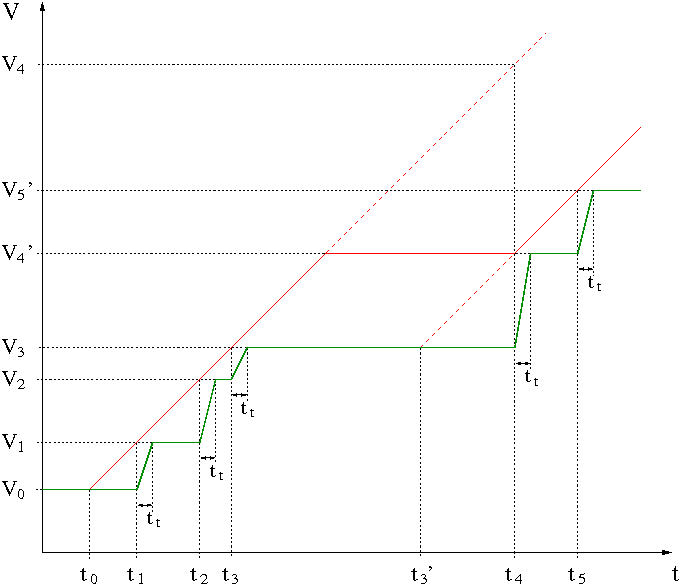

Voltage ramps
The inverse slew rate parameters vout_rise_t_ms_... and vout_fall_t_ms... of the DPSPINS resources can be used to define voltage ramps that are calculated and applied by the system controller.
Connect/Disconnect of pins in HIZ or HIZ_R Off mode
The output voltages of pins in HIZ or HIZ_R Off mode (offcurr = open or min) are undefined while they are disconnected. If such pins are connected or disconnected and ramps are defined, then the ramps are executed as if the connect mode is LOZ Off (offcurr = act) in order to get defined start respectively end voltages for the ramps. For a connect, the pins are switched to LOZ Off mode before the first ramp starts. For a disconnect, the ramps are executed in LOZ Off mode and the pins are switched to HIZ or HIZ_R Off mode after the last ramp has finished and all setup times have expired.
Voltage ramp approximation
The graphic in the example below shows, how a ramp is approximated by periodically reprogramming the voltage DAC. The time between two programming steps is not fixed. The steps are executed as fast as possible, but not faster than 25 μs, one after the other.
The system controller uses the time difference between the current time and the time of the last step to compute the next voltage value. This assures, that the generated ramps are as smooth as possible. But because the programming is done by the system controller, a maximum time between two steps cannot be ensured.
If several ramps are generated at the same time, all affected channels must be programmed sequentially. Therefore, the time required for one step depends on the number of affected channels.
For example, a ramp on a single DPS128 pin could be programmed every 30 µs, while programming a ramp on two DPS128 pins at the same time increases the update time to at least 60 µs, which for a given slew rate also means that the calculated step height must be doubled in order to reach the target ramp.
Furthermore, the system controller's operating system (OS) isn't a real time OS; the scheduler may interrupt any process for an arbitrary time.
For each step, the voltage changes from the previous to the new voltage with the inherent slew rate of the DPS channel. Roughly approximated, each voltage step takes the same time, regardless of the voltage difference (constant rise/fall time behavior). This is shown as transition time (tt) in the example graphic below.
Depending on the settings of the inverse slew rate parameters vout_rise_t_ms_per_volt, vout_rise_t_ms_per_volt_c2c, vout_fall_t_ms_per_volt, or vout_fall_t_ms_per_volt_c2c, and the total change in the forced voltage, the number of steps is calculated. Smallest rise times (below 1/2 transition time) will result in a single step that is applied with the maximum slew rate of the DPS channel.
These are the approximated values for the transition times of the different DPS types:
| DPS type | Transition time tt |
|---|---|
| DPS64-HC / DPS128-HC/HV | 30 µs |
| UHC4T | 150 µs |
| XPS256 | 70 µs |
The actual transition time values depend on the hardware and the actual loading of the DPS, but for the purpose of this check it's sufficient to use these approximated values.
Limitation of the voltage step height
Assuming that the operating system does not cause any delays and that the time for the entire ramp is more than ten times the accumulated transition time of all programmed pins, it can also be assumed that approximately the same voltage steps are programmed for the entire ramp.
As soon as delays occur or the time of the ramp is too short compared to the transition time of the pins, larger voltage steps may be required to reach the target ramp. In this case, all voltage steps are limited to 10% of the total ramp amplitude or 200 mV, whichever is less.
This assures, that each step with a faster slew rate than programmed is limited to 200 mV and that the ramp has at least 10 steps. If such a voltage step limitation occurs, the target ramp is shifted to the new point. The same time shift is applied to all executed ramps, so that the relationship between the ramps remains unchanged.
Example
- The theoretically wanted line is shown in red. The line is defined by the initial voltage V0, the programmed target voltage and the vout_rise_... parameter setting.
- The actual approximated output voltage is shown in green.
The ramp starts at t0 and at the time of the first step t1, the desired voltage is V1. The voltage step is smaller than the limit, so the output voltage is programmed to V1. This repeats for the second and third step.
But there's a long delay before the 4th step, so the voltage step V4 - V3 would be too large. The new voltage for this step is limited to V4' and the target ramp for this and the next steps is shifted to the points (t3', V3) and (t4, V4'). This means, that the width of the 4th time step is assumed to be t4 - t3' instead of t4 - t3. This new step width for the 4th step is taken for the ramps of all other pins as well. Therefore, the relationships between all ramps remain the same. If this correction is necessary for more than one pin, then the smallest corrected time step is taken for all pins.

Functional changes
- Introduced in SmarTest 7.1.0
- SmarTest 7.4.0: Transition time of AVI64 added.
- SmarTest 7.5.0: Transition time of FVI16 added.